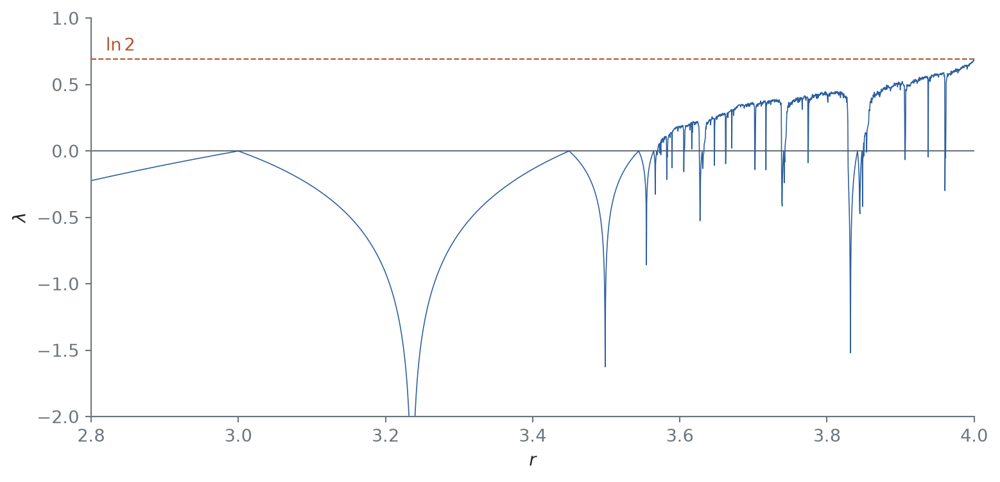
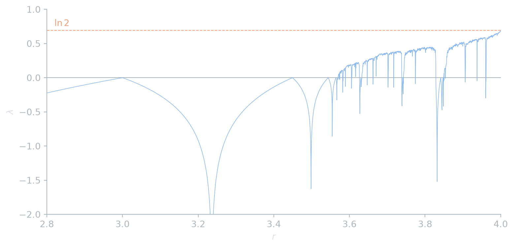

Nam Le
5 September 2026
The bifurcation diagram of the logistic map shows where orbits stop being periodic, but not how chaotic they are. The Lyapunov exponent measures this as the average exponential rate at which nearby orbits separate.
Two orbits of a map \(f\) that start \(\delta_0\) apart are, to first order, \(|\delta_n| \approx |\delta_0| \prod_{i=0}^{n-1} |f'(x_i)|\) apart after \(n\) steps, by the chain rule. Taking logarithms and averaging gives the following.
Definition 1 (Lyapunov exponent) The Lyapunov exponent of the orbit of \(x_0\) under a \(C^1\) map \(f\) is \[ \lambda(x_0) = \lim_{n \to \infty} \frac1n \sum_{i=0}^{n-1} \ln |f'(x_i)|, \qquad x_{i+1} = f(x_i), \tag{1}\] when the limit exists.
A negative \(\lambda\) means nearby orbits converge, as they do onto a stable periodic orbit. A positive \(\lambda\) means they separate exponentially, which is sensitive dependence on initial conditions. At a period-doubling point the multiplier is \(-1\), so \(\lambda = 0\) there.
Proposition 1 If \(x_0\) lies on a periodic orbit \(\{x_0, \ldots, x_{p-1}\}\) of period \(p\), then \(\lambda(x_0) = \frac1p \ln |(f^p)'(x_0)|\). In particular \(\lambda < 0\) for a stable cycle with multiplier of modulus less than 1.
Proof. The sum in Equation 1 repeats with period \(p\), and by the chain rule \(\prod_{i=0}^{p-1} f'(x_i) = (f^p)'(x_0)\).
For the logistic map \(f_r(x) = rx(1-x)\) we have \(f_r'(x) = r(1 - 2x)\). The code below discards a transient, then averages \(\ln|f_r'(x_i)|\) over 2000 iterations for each of 3000 values of \(r\).
r = np.linspace(2.8, 4.0, 3000)
x = np.full_like(r, 0.3)
for _ in range(1000):
x = r * x * (1 - x)
lam = np.zeros_like(r)
n = 2000
for _ in range(n):
x = r * x * (1 - x)
lam += np.log(np.maximum(np.abs(r * (1 - 2 * x)), 1e-12))
lam /= n
def draw(fig, ax, c):
ax.axhline(0, color=c.muted, lw=0.8)
ax.axhline(np.log(2), color=c.accent2, lw=0.8, ls="--")
ax.text(2.82, np.log(2) + 0.06, r"$\ln 2$", color=c.accent2)
ax.plot(r, lam, color=c.accent, lw=0.6)
ax.set(xlim=(2.8, 4), ylim=(-2, 1), xlabel=r"$r$", ylabel=r"$\lambda$")
themed(draw, figsize=(8, 3.8))

At \(r = 4\) the average settles very close to \(\ln 2 \approx 0.6931\):
Proposition 2 Let \(T(y) = 1 - |1 - 2y|\) be the tent map on \([0, 1]\) and \(h(y) = \sin^2(\pi y/2)\). Then \(f_4 \circ h = h \circ T\).
Proof. \(f_4(h(y)) = 4\sin^2(\pi y/2)\cos^2(\pi y/2) = \sin^2(\pi y)\). For \(y \leq \tfrac12\), \(h(T(y)) = h(2y) = \sin^2(\pi y)\). For \(y > \tfrac12\), \(h(T(y)) = h(2 - 2y) = \sin^2(\pi - \pi y) = \sin^2(\pi y)\).
So the logistic map at \(r = 4\) is the tent map in disguise. The tent map stretches every interval by exactly a factor of 2, so its exponent is \(\ln 2\) for every orbit that avoids the kink at \(y = \tfrac12\). The change of variables \(h\) is smooth with a smooth inverse on the open interval, and this does not change the long-run average for typical orbits, so \(\lambda = \ln 2\) for Lebesgue-almost every \(x_0\) (Strogatz 2015, sec. 10.5).
Remark. Floating-point arithmetic cannot follow an individual chaotic orbit for long: with \(\lambda = \ln 2\), the \(2^{-53}\) rounding error doubles each step and swamps the orbit after about 50 iterations. The computed average is still meaningful in practice: the rounded sequence behaves statistically like a typical true orbit, and averages like Equation 1 are the same for almost every true orbit. Shadowing theorems make this kind of argument rigorous for some classes of systems.
@online{le2026,
author = {Le, Nam},
title = {Lyapunov Exponents of One-Dimensional Maps},
date = {2026-09-05},
url = {https://dynamics.namln.org/posts/2026-09-05-lyapunov-exponents/},
langid = {en}
}
---
title: "Lyapunov exponents of one-dimensional maps"
description: "Measuring sensitive dependence as an average rate of stretching, computing it for the logistic map, and getting $\\lambda = \\ln 2$ exactly at $r = 4$."
date: 2026-09-05
categories: [chaos, maps, numerics]
---
```{python}
#| include: false
import sys; sys.path.insert(0, "..")
import numpy as np
from _blog import themed
```
The [bifurcation diagram of the logistic map](../2026-08-29-logistic-map/index.qmd) shows where orbits stop being periodic, but not *how* chaotic they are. The Lyapunov exponent measures this as the average exponential rate at which nearby orbits separate.
## Definition
Two orbits of a map $f$ that start $\delta_0$ apart are, to first order, $|\delta_n| \approx |\delta_0| \prod_{i=0}^{n-1} |f'(x_i)|$ apart after $n$ steps, by the chain rule. Taking logarithms and averaging gives the following.
::: {#def-exponent}
## Lyapunov exponent
The **Lyapunov exponent** of the orbit of $x_0$ under a $C^1$ map $f$ is
$$
\lambda(x_0) = \lim_{n \to \infty} \frac1n \sum_{i=0}^{n-1} \ln |f'(x_i)|, \qquad x_{i+1} = f(x_i),
$$ {#eq-exponent}
when the limit exists.
:::
A negative $\lambda$ means nearby orbits converge, as they do onto a stable periodic orbit. A positive $\lambda$ means they separate exponentially, which is *sensitive dependence on initial conditions*. At a period-doubling point the multiplier is $-1$, so $\lambda = 0$ there.
::: {#prp-cycle}
If $x_0$ lies on a periodic orbit $\{x_0, \ldots, x_{p-1}\}$ of period $p$, then $\lambda(x_0) = \frac1p \ln |(f^p)'(x_0)|$. In particular $\lambda < 0$ for a stable cycle with multiplier of modulus less than 1.
:::
::: {.proof}
The sum in @eq-exponent repeats with period $p$, and by the chain rule $\prod_{i=0}^{p-1} f'(x_i) = (f^p)'(x_0)$.
:::
## Computing it
For the logistic map $f_r(x) = rx(1-x)$ we have $f_r'(x) = r(1 - 2x)$. The code below discards a transient, then averages $\ln|f_r'(x_i)|$ over 2000 iterations for each of 3000 values of $r$.
::: {#fig-exponent}
```{python}
#| renderings: [light, dark]
#| fig-alt: "Lyapunov exponent of the logistic map against r from 2.8 to 4. It is negative with dips to minus infinity before about 3.57, then mostly positive with negative spikes at periodic windows, reaching ln 2 at r = 4."
r = np.linspace(2.8, 4.0, 3000)
x = np.full_like(r, 0.3)
for _ in range(1000):
x = r * x * (1 - x)
lam = np.zeros_like(r)
n = 2000
for _ in range(n):
x = r * x * (1 - x)
lam += np.log(np.maximum(np.abs(r * (1 - 2 * x)), 1e-12))
lam /= n
def draw(fig, ax, c):
ax.axhline(0, color=c.muted, lw=0.8)
ax.axhline(np.log(2), color=c.accent2, lw=0.8, ls="--")
ax.text(2.82, np.log(2) + 0.06, r"$\ln 2$", color=c.accent2)
ax.plot(r, lam, color=c.accent, lw=0.6)
ax.set(xlim=(2.8, 4), ylim=(-2, 1), xlabel=r"$r$", ylabel=r"$\lambda$")
themed(draw, figsize=(8, 3.8))
```
Lyapunov exponent of the logistic map. Negative spikes inside the chaotic region are periodic windows; the largest, near $r = 3.83$, is the period-3 window.
:::
At $r = 4$ the average settles very close to $\ln 2 \approx 0.6931$:
```{python}
x, total, n = 0.3, 0.0, 200_000
for _ in range(n):
x = 4 * x * (1 - x)
total += np.log(abs(4 * (1 - 2 * x)))
print(f"lambda(4) ≈ {total / n:.4f}, ln 2 = {np.log(2):.4f}")
```
## Why exactly $\ln 2$ at $r = 4$
::: {#prp-conjugacy}
Let $T(y) = 1 - |1 - 2y|$ be the tent map on $[0, 1]$ and $h(y) = \sin^2(\pi y/2)$. Then $f_4 \circ h = h \circ T$.
:::
::: {.proof}
$f_4(h(y)) = 4\sin^2(\pi y/2)\cos^2(\pi y/2) = \sin^2(\pi y)$. For $y \leq \tfrac12$, $h(T(y)) = h(2y) = \sin^2(\pi y)$. For $y > \tfrac12$, $h(T(y)) = h(2 - 2y) = \sin^2(\pi - \pi y) = \sin^2(\pi y)$.
:::
So the logistic map at $r = 4$ is the tent map in disguise. The tent map stretches every interval by exactly a factor of 2, so its exponent is $\ln 2$ for every orbit that avoids the kink at $y = \tfrac12$. The change of variables $h$ is smooth with a smooth inverse on the open interval, and this does not change the long-run average for typical orbits, so $\lambda = \ln 2$ for Lebesgue-almost every $x_0$ [@strogatz2015, sec. 10.5].
::: {.remark}
Floating-point arithmetic cannot follow an individual chaotic orbit for long: with $\lambda = \ln 2$, the $2^{-53}$ rounding error doubles each step and swamps the orbit after about 50 iterations. The computed average is still meaningful in practice: the rounded sequence behaves statistically like a typical true orbit, and averages like @eq-exponent are the same for almost every true orbit. Shadowing theorems make this kind of argument rigorous for some classes of systems.
:::